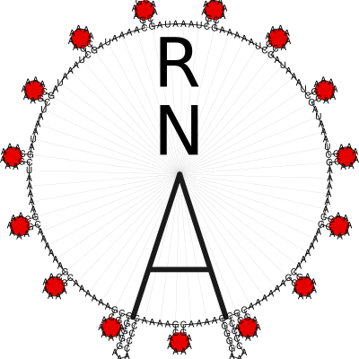

A Library for predicting and comparing RNA secondary structures
{kind=link}
The core of the ViennaRNA Package (Lorenz et al. [2011], Hofacker et al. [1994]) is formed by a collection of routines for the prediction and comparison of RNA secondary structures. These routines can be accessed through stand-alone programs, such as RNAfold, RNAdistance etc., which should be sufficient for most users. For those who wish to develop their own programs we provide RNAlib, a C-library that can be linked to your own code or even used in your scripts and pipelines through our SWIG Wrappers for Python and Perl 5.
The latest version of the package including source code and html versions of the documentation can be found at https://www.tbi.univie.ac.at/RNA and https://github.com/ViennaRNA/ViennaRNA.
Installation
Usage and Tutorials:
RNAlib API Reference
Miscellaneous
Indices and tables
Contributors
Over the past decades since the ViennaRNA Package first sprang to life as part of Ivo L. Hofackers PhD project, several authors contributed more and more algorithm implementations. In 2008, Ronny Lorenz took over the extensive task to harmonize and simplify the already existing implementations for the sake of easier feature addition. This eventually lead to version 2.0 of the ViennaRNA Package. Since then, he (re-)implemented a large portion of the currently existing library features, such as the new, generalized constraints framework, RNA folding grammar domain extensions, and the major part of the scripting language interface.
Below is a list of most people who contributed larger parts of the implementations:
Daniel Wiegreffe (RNAturtle and RNApuzzler secondary structure layouts)
Andreas Gruber (first approach on RNALfold Z-score filtering)
Juraj Michalik (non-redundant Boltzmann sampling)
Gregor Entzian (neighbor, walk)
Mario Koestl (worked on SWIG interface and related unit testing)
Dominik Luntzer (pertubation fold)
Stefan Badelt (cofold evaluation, RNAdesign.pl, cofold findpath extensions)
Stefan Hammer (parts of SWIG interface and corresponding unit tests)
Ronny Lorenz (circfold, version 2.0, generic constraints, grammar extensions, and much more)
Hakim Tafer (RNAplex, RNAsnoop)
Ulrike Mueckstein (RNAup)
Stephan Bernhart (RNAcofold, RNAplfold, unpaired probabilities, alifold, and so many more)
Stefan Wuchty (RNAsubopt)
Ivo Hofacker, Peter Stadler, and Christoph Flamm (almost every implementation up to version 1.8.5)
We also want to thank the following people:
Sebastian Bonhoeffer’s implementation of partition function folding served as a precursor to our part_func.c
Manfred Tacker hacked constrained folding into fold.c for the first time
Martin Fekete made the first attempts at “alignment folding”
Andrea Tanzer and Martin Raden (Mann) for not stopping to report bugs found through comprehensive usage of our applications and RNAlib
Thanks also to everyone else who helped testing and finding bugs, especially Christoph Flamm, Martijn Huynen, Baerbel Krakhofer, and many more.